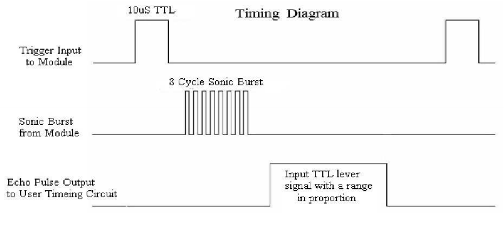

Nota
¡Hola! Bienvenido a la Comunidad de Entusiastas de Raspberry Pi, Arduino y ESP32 de SunFounder en Facebook. Sumérgete en el mundo de Raspberry Pi, Arduino y ESP32 junto a otros entusiastas.
¿Por qué unirse?
Soporte de Expertos: Resuelve problemas postventa y desafíos técnicos con la ayuda de nuestra comunidad y equipo.
Aprende y Comparte: Intercambia consejos y tutoriales para mejorar tus habilidades.
Avances Exclusivos: Obtén acceso anticipado a anuncios de nuevos productos y adelantos exclusivos.
Descuentos Especiales: Disfruta de descuentos exclusivos en nuestros productos más recientes.
Promociones Festivas y Sorteos: Participa en sorteos y promociones especiales durante las festividades.
👉 ¿Listo para explorar y crear con nosotros? Haz clic en [Aquí] y únete hoy mismo.
2.2.5 Módulo Sensor Ultrasónico
Introducción
El sensor ultrasónico utiliza ondas ultrasónicas para detectar objetos con precisión y medir distancias. Emite ondas ultrasónicas y las convierte en señales electrónicas.
Componentes

Principio
Ultrasonido
El módulo de rango ultrasónico proporciona una función de medición sin contacto de 2 cm a 400 cm, con una precisión de hasta 3 mm. Puede asegurar que la señal sea estable dentro de los 5 metros y se va debilitando gradualmente hasta desaparecer alrededor de los 7 metros.
El módulo incluye transmisores ultrasónicos, receptor y circuito de control. Los principios básicos son los siguientes:
1. Usar un flip-flop de IO para procesar una señal de alto nivel de al menos 10 us.
2. El módulo envía automáticamente ocho pulsos de 40 kHz y detecta si hay un retorno de señal de pulso.
3. Si la señal retorna, pasando al nivel alto, la duración de salida alta del IO es el tiempo desde la transmisión de la onda ultrasónica hasta su retorno. Aquí, la distancia de prueba = (tiempo alto x velocidad del sonido (340 m/s) / 2.


El diagrama de tiempos se muestra a continuación. Solo necesitas suministrar un pulso corto de 10 us para la entrada de disparo para iniciar la medición. Luego, el módulo enviará una ráfaga de 8 ciclos de ultrasonido a 40 kHz y elevará su eco. Puedes calcular la distancia a través del intervalo de tiempo entre el envío de la señal de disparo y la recepción de la señal de eco.
Fórmula: us / 58 = centímetros o us / 148 = pulgadas; o: rango = tiempo de nivel alto * velocidad (340M/S) / 2; se sugiere usar un ciclo de medición superior a 60 ms para prevenir colisiones de señal entre la señal de disparo y la señal de eco.
{kind=link}
Diagrama Esquemático

Procedimientos Experimentales
Paso 1: Construye el circuito.

Para Usuarios de Lenguaje C
Paso 2: Dirígete a la carpeta del código.
cd ~/davinci-kit-for-raspberry-pi/c/2.2.5/
Paso 3: Compila el código.
gcc 2.2.5_Ultrasonic.c -lwiringPi
Paso 4: Ejecuta el archivo compilado.
sudo ./a.out
Con el código en ejecución, el módulo de sensor ultrasónico detectará la distancia entre el obstáculo enfrente y el propio módulo, y el valor de la distancia se imprimirá en la pantalla.
Nota
Si no funciona después de ejecutar, o aparece un mensaje de error: "wiringPi.h: No such file or directory", consulta c code is not working?.
Código
#include <wiringPi.h>
#include <stdio.h>
#include <sys/time.h>
#define Trig 4
#define Echo 5
void ultraInit(void)
{
pinMode(Echo, INPUT);
pinMode(Trig, OUTPUT);
}
float disMeasure(void)
{
struct timeval tv1;
struct timeval tv2;
long time1, time2;
float dis;
digitalWrite(Trig, LOW);
delayMicroseconds(2);
digitalWrite(Trig, HIGH);
delayMicroseconds(10);
digitalWrite(Trig, LOW);
while(!(digitalRead(Echo) == 1));
gettimeofday(&tv1, NULL);
while(!(digitalRead(Echo) == 0));
gettimeofday(&tv2, NULL);
time1 = tv1.tv_sec * 1000000 + tv1.tv_usec;
time2 = tv2.tv_sec * 1000000 + tv2.tv_usec;
dis = (float)(time2 - time1) / 1000000 * 34000 / 2;
return dis;
}
int main(void)
{
float dis;
if(wiringPiSetup() == -1){ // si la inicialización de wiring falla, muestra mensaje en pantalla
printf("setup wiringPi failed !");
return 1;
}
ultraInit();
while(1){
dis = disMeasure();
printf("%0.2f cm\n\n",dis);
delay(300);
}
return 0;
}
Explicación del Código
void ultraInit(void)
{
pinMode(Echo, INPUT);
pinMode(Trig, OUTPUT);
}
Inicializa el pin ultrasónico; al mismo tiempo, configura Echo como entrada y Trig como salida.
float disMeasure(void){};
Esta función se utiliza para calcular la distancia detectada mediante el sensor ultrasónico.
struct timeval tv1;
struct timeval tv2;
Struct timeval es una estructura usada para almacenar la hora actual. La estructura completa es la siguiente:
struct timeval
{
__time_t tv_sec; /* Segundos. */
__suseconds_t tv_usec; /* Microsegundos. */
};
Aquí, tv_sec representa los segundos transcurridos desde Epoch al crear struct timeval. Tv_usec representa microsegundos o una fracción de segundos.
digitalWrite(Trig, HIGH);
delayMicroseconds(10);
digitalWrite(Trig, LOW);
Se envía un pulso ultrasónico de 10us.
while(!(digitalRead(Echo) == 1));
gettimeofday(&tv1, NULL);
Este bucle vacío asegura que cuando se envía la señal de disparo, no haya una señal de eco interferente y luego obtiene la hora actual.
while(!(digitalRead(Echo) == 0));
gettimeofday(&tv2, NULL);
Este bucle vacío asegura que no se ejecute el siguiente paso hasta que se reciba la señal de eco y luego obtiene la hora actual.
time1 = tv1.tv_sec * 1000000 + tv1.tv_usec;
time2 = tv2.tv_sec * 1000000 + tv2.tv_usec;
Convierte el tiempo almacenado por struct timeval en microsegundos completos.
dis = (float)(time2 - time1) / 1000000 * 34000 / 2;
La distancia se calcula mediante el intervalo de tiempo y la velocidad de propagación del sonido. La velocidad del sonido en el aire es de 34000 cm/s.
Para Usuarios de Python
Paso 2: Ve a la carpeta del código.
cd ~/davinci-kit-for-raspberry-pi/python/
Paso 3: Ejecuta el archivo.
sudo python3 2.2.5_Ultrasonic.py
Al ejecutar el código, el módulo de sensor ultrasónico detectará la distancia entre el obstáculo y el módulo, y el valor de la distancia se mostrará en la pantalla.
Código
Nota
Puedes Modificar/Restablecer/Copiar/Ejecutar/Detener el código a continuación. Pero antes, debes ir a la ruta del código fuente como davinci-kit-for-raspberry-pi/python.
import RPi.GPIO as GPIO
import time
TRIG = 16
ECHO = 18
def setup():
GPIO.setmode(GPIO.BOARD)
GPIO.setup(TRIG, GPIO.OUT)
GPIO.setup(ECHO, GPIO.IN)
def distance():
GPIO.output(TRIG, 0)
time.sleep(0.000002)
GPIO.output(TRIG, 1)
time.sleep(0.00001)
GPIO.output(TRIG, 0)
while GPIO.input(ECHO) == 0:
a = 0
time1 = time.time()
while GPIO.input(ECHO) == 1:
a = 1
time2 = time.time()
during = time2 - time1
return during * 340 / 2 * 100
def loop():
while True:
dis = distance()
print ('Distance: %.2f' % dis)
time.sleep(0.3)
def destroy():
GPIO.cleanup()
if __name__ == "__main__":
setup()
try:
loop()
except KeyboardInterrupt:
destroy()
Explicación del Código
def distance():
Esta función se utiliza para implementar la funcionalidad del sensor ultrasónico calculando la distancia detectada.
GPIO.output(TRIG, 1)
time.sleep(0.00001)
GPIO.output(TRIG, 0)
Este fragmento envía un pulso ultrasónico de 10us.
while GPIO.input(ECHO) == 0:
a = 0
time1 = time.time()
Este bucle vacío asegura que, cuando se envíe la señal de disparo, no haya señales de eco interferentes, y luego obtiene la hora actual.
while GPIO.input(ECHO) == 1:
a = 1
time2 = time.time()
Este bucle vacío asegura que no se ejecute el siguiente paso hasta que se reciba la señal de eco, y luego obtiene la hora actual.
during = time2 - time1
Ejecuta el cálculo del intervalo de tiempo.
return during * 340 / 2 * 100
La distancia se calcula en función del intervalo de tiempo y la velocidad de propagación del sonido. Velocidad del sonido en el aire: 340m/s.
Imagen del Fenómeno